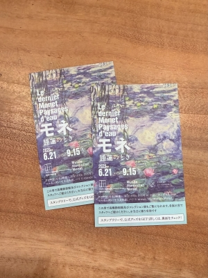
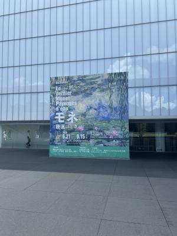
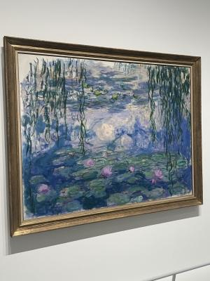
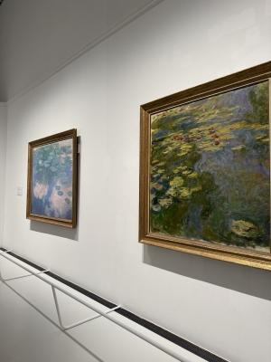
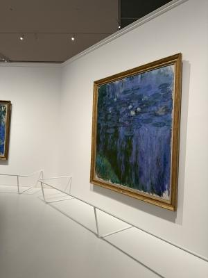
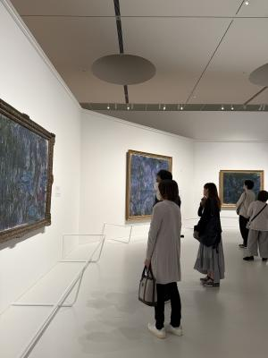
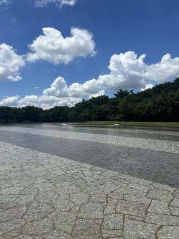
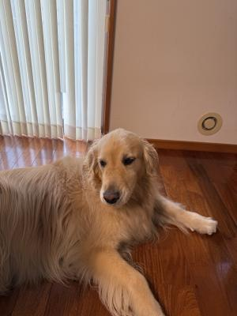

モネ展に行って来ました。2025-7
先日、唐突にダンナ氏が「モネ展に行きたい・・・」と、
ぼっそりつぶやきました。
・・・いや、なんでまた ? まじで唐突ですヨ(笑)。
美術館とか、博物館とか・・・昔はよく行ったんだけど、
まぁ一応、教育学部だけど美術科だもんで(笑)。

↑
お支払いの証明メール ? みたいなのを見せると発行してくれるチケット。
最近はネットでチケット取れるし、お支払いはクレジットカードだし・・・
美術館や博物館、よくダンナ氏に付き合ってもらってたんだけどね、
うっかり病を患っていた(今もか?)ワタクシは、あらかじめ買っておいたチケットを
忘れて来たりしてよく怒られてましてん(汗)・・・。
今は電子チケットとかだったりしたらスマホさえあれば忘れようもないし、
便利な世の中ですよ〜。
(スマホを忘れるって強者は・・・いるかしら〜 笑)

↑
豊田市美術館入り口。
多分、行ったことあると思うんだけど、かつての記憶が行方不明(笑)。
入り口にこんな素敵な池 ? 噴水 ?? なんてあったかなぁ。
↓
天気が良くて、よく青空に建物が映えますねぇ、暑かったけど。
モネって、自宅に和風の池を作って山ほどの睡蓮の絵を描いたんですよね。
オランジェリー美術館の巨大な睡蓮のイメージが強くて、
「もしや、豊田なんて田舎に(・・・失礼 ! )あのでっかい睡蓮が !? 」なんて
思ったんですがさすがにでかいのはありませんでした・・・てか、
オランジェリー美術館の睡蓮は、デカすぎて「絵画」というより「壁画」だったようです。
そうでなくても、モネって人生の後半はだいたい睡蓮を描いてたんじゃない ? って
思うくらいのたくさんのいろんな睡蓮が展示されていました。
モネと言えば、溶けてしまいそうな淡い色合いの睡蓮のイメージが強いけど、
真夏の強い光の下のパキッとしたコントラストの睡蓮や、真っ赤な夕日に染まる睡蓮や、
池の水面に映り込んだ木々の影の上に漂う睡蓮や、空の雲の間に浮かぶ睡蓮や・・・
ホント、睡蓮ばっかりなんだけど、みんなちがってて全然別の絵なの。




(一部写真撮影おっけーな部屋があったのよ〜。)
それに、モネの年表って初めて見た気がするんだけど・・・
晩年は白内障を患っていたらしく、あの夢の中にいるような淡い色調が
そのせで生まれてきたんじゃ ?? って想像できてしまって、
「描きたい」って欲求はあるのにどんどん進行する目の病が、
作家の心象にどんな影響を与えたんだろうと、ちょっと切なくなりました。
そんな事実を踏まえて改めてさまざまな睡蓮を見てみると、
それぞれの色調やさりげない表現に、その時々の心のかけらが
潜んでいるように見えちゃったな。

美術館の中庭 ? にある池(・・・池多くね ? 笑)、静かな水面が美しかったんだけど
あんまり暑くて水浴びしたくなったよ(足だけ〜 笑)。
ただし、「入らないでください」って、書いてあった(笑)。
いや〜・・・子どもだったら本能的にじゃぶじゃぶしてた・・・と思うな(笑)。
せっかくなのでモネ展の半券で見れる全ての展示を見て来ました。
たまにはこんな高尚な1日を過ごすのも良いですね〜。

・・・ひましゃんはパパとママがおでかけしゅるからって、
あっちゅいおにわにほーりだしゃれたでしゅ・・・。
じゅっと、ひましゃんはうっどでっきのしたでじっとしてたでしゅよ。
ひましゃんにおみやげはないんでしゅかっ !?